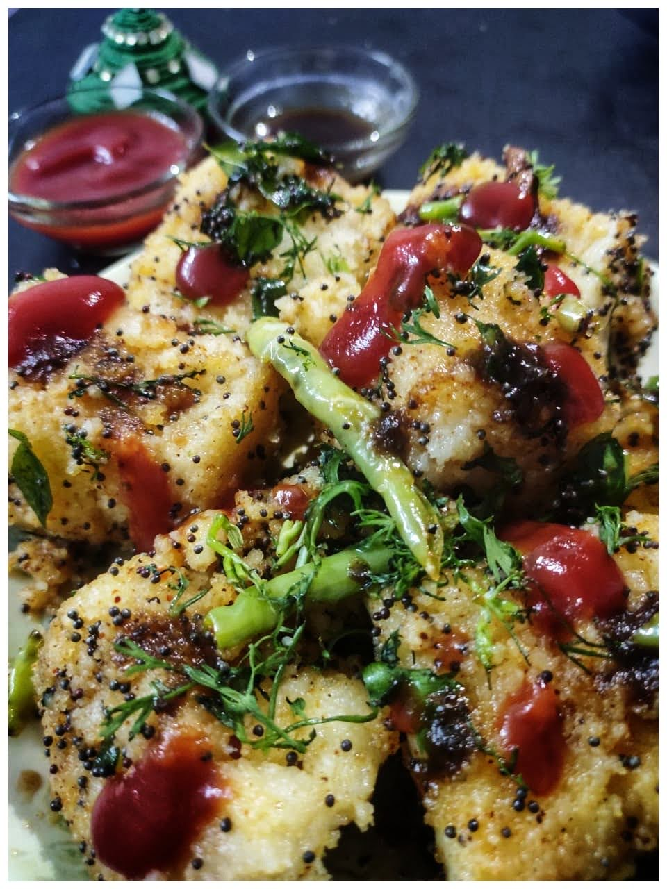

Rawa Dhokla Recipe
Rawa Dhokla Recipe

Description
Rawa dhokla is a popular snack from the western Indian state of Gujarat.
It is made from rawa, or semolina, which is mixed with yogurt and spices
to form a batter. The batter is then steamed in a special dhokla mold or
steamer until it is cooked through. Rawa dhokla is typically served with
a chutney or sauce on top, and it is often garnished with chopped
coriander leaves. It is light, fluffy, and has a slightly sour taste due
to the yogurt. Rawa dhokla is often eaten as a snack or as part of a
meal.
Ingredients
For Dhokla
- 📌 Rawa / Semolina- 2 cups
- 📌 Chaanch / Buttermilk- 3 cups
- 📌 Salt
- 📌 Soda/Eno - 1/2 tsp
For Tadka
- 📌 Mustard seeds
- 📌 Curry leaves
- 📌 Green chillies
- 📌 Turmeric powder
- 📌 Red chilli powder
- 📌 Salt
Method
For Dhokla
- Take buttermilk in a bowl. Add rawa to it.
-
Mix continuously as you add rawa, so that no lumps form. Now add salt
to taste.
- Keep the batter at room temperature for 30 minutes.
- Add soda/eno to the batter when you are about to cook it.
-
Take a cooker and fill 2 glasses of water in it and place a stand
under it.
-
Grease a container all over with ghee and pour the batter into it.
-
Place the tin inside the cooker and steam it for 35-40 min at medium
flame.
- Be sure to remove the whistle and gasket from the cooker.
-
Check with a spoon or knife. If it comes out clean, it's ready...
otherwise, give it more time.
- Take out the dhokla from the tin and cut it into square pieces.
For Tadka
- Add oil to a pan and heat it.
-
Once the mustard seeds sizzle, add the curry leaves and green
chillies.
-
Now add a pinch of turmeric powder, red chilli powder and salt as per
taste.
- Add the dhoklas and mix them well.
-
Garnish it with corriander, green chilli and serve it with Tamarind
chutney.
- Now your Rawa Dhoklas are ready to eat.
More thoughts
Rawa dhokla can be served as a snack or as part of a meal. It is
typically served at room temperature or slightly warm. Here are a few
serving suggestions:
-
Cut the dhokla into small squares or triangles and serve with a
chutney or sauce on top. Some popular chutneys to serve with dhokla
include coconut chutney, coriander chutney, and tamarind chutney.
-
Garnish the dhokla with chopped coriander leaves, grated coconut,
and/or a sprinkle of chaat masala.
-
Serve the dhokla as part of a larger spread of snacks, such as
pakoras, samosas, and bhajias.
-
Serve the dhokla as part of a thali, or traditional Indian platter,
along with rice, dal, vegetables, and chapatis.
- Enjoy the dhokla as a snack with a cup of chai or masala chai.
Home